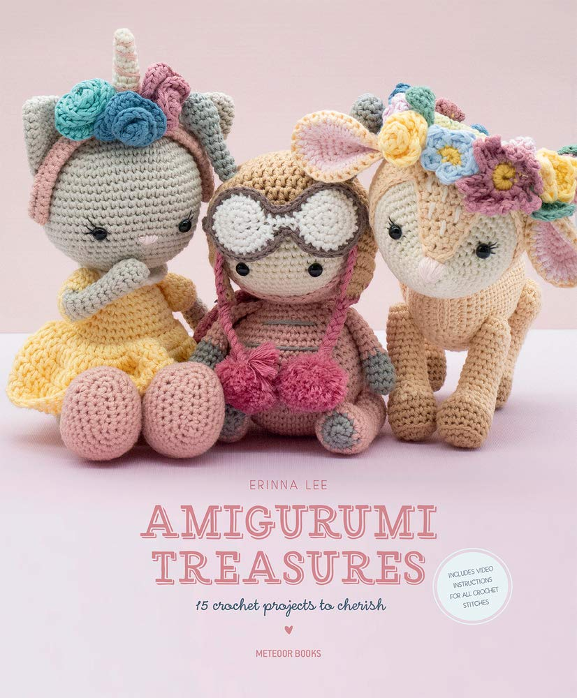
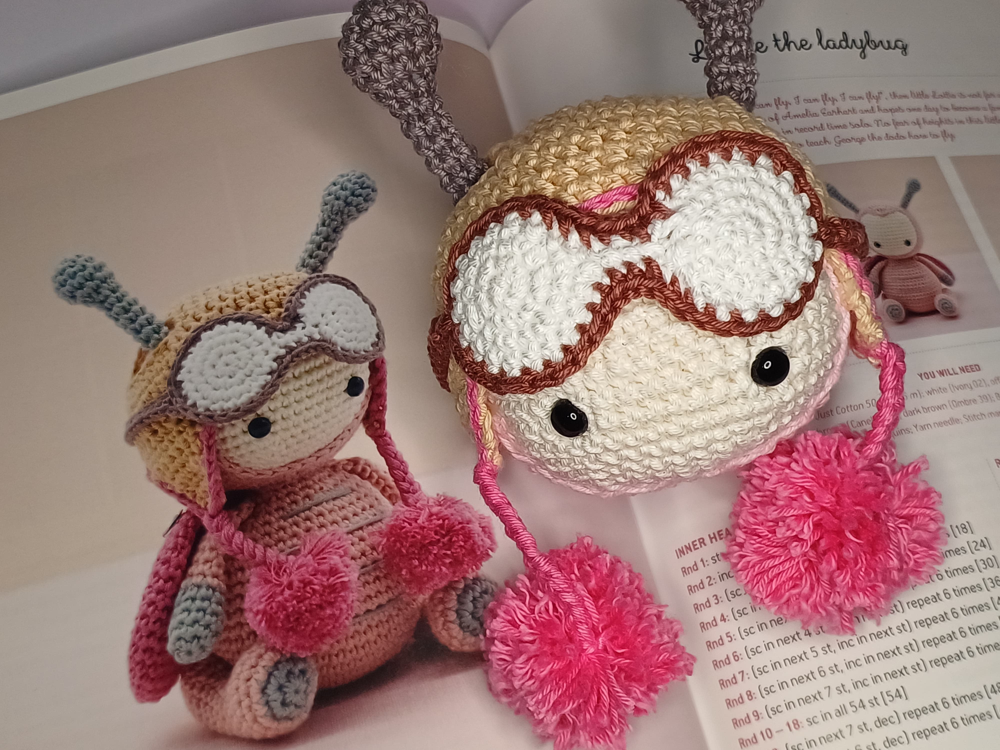
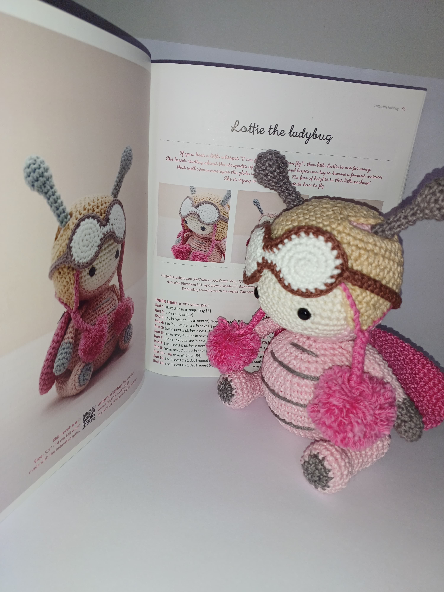
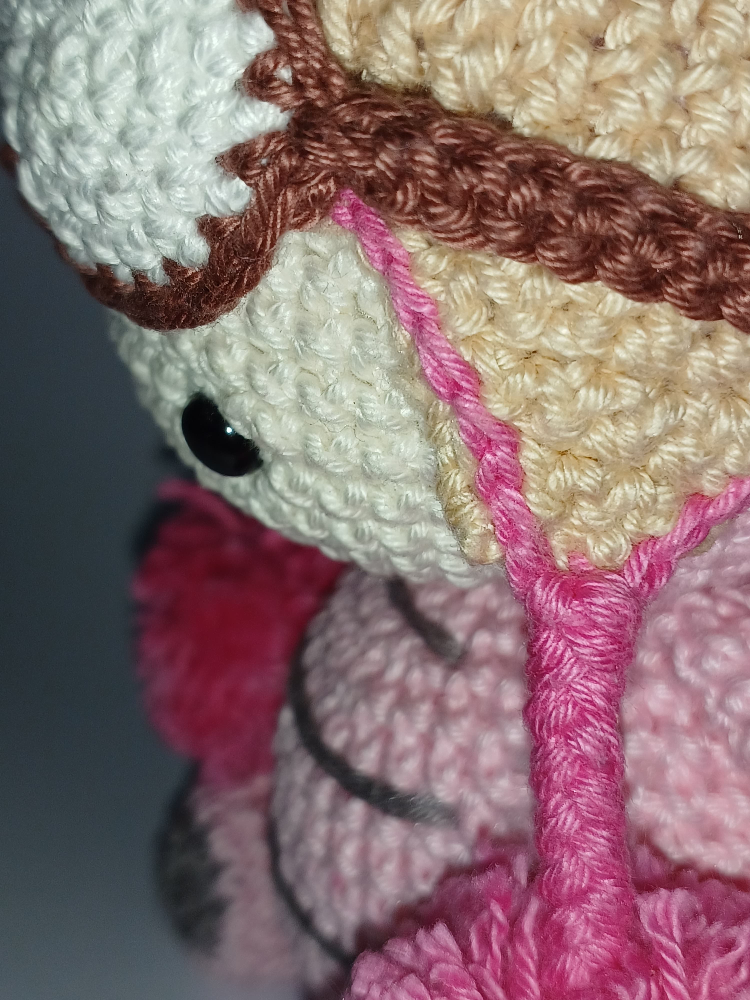

Esse artigo que inaugura o Blog do Mimo, traz dicas de como tecer essa adorável abelhinha com o máximo de capricho e delicadeza. O padrão que pode ser encontrado no livro de Erina Lee, Amigurimi Treasures, foi redigido na melhor sequência de execução. As partes de projeção da cabeça, pontas da touca e óculos, são as principais exigências de cuidado para garantir o bom acabamento. Uma outra dica é concluir a touca e experimentar na cabeça da abelhinha antes de costurar as antenas garantindo o posicionamento mais preciso.




Uma particularidade da abelhinha Amigumimo foi não costurar as lantejoulas sugeridas na asa pelo padrão, uma vez que a peça foi confeccionada para uma criança pequena e esse detalhe de embelezamento foi preterido para maior segurança. O resultado final é uma peça de aproximadamente 15 cm de altura que transmite alegria e doçura.